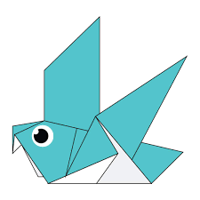
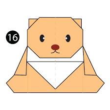

Interesting facts about camel
-
Camels are mammals with long legs, a big-lipped snout and a humped back.
-
There are two types of camels: One humped or “dromedary” camels and two humped Bactrian camels.
-
Camels have thick lips which let them forage for thorny plants other animals can't eat.

Interesting facts about chameleon
-
THEIR FEET WORK LIKE SALAD TONGS.
-
ALMOST HALF OF ALL KNOWN SPECIES LIVE IN MADAGASCAr
-
CHAMELEONS VARY WILDLY IN TERMS OF SIZE.

Interesting facts about pigeon
-
Pigeons are incredibly complex and intelligent animals
-
Pigeons are renowned for their outstanding navigational abilities. ...
-
Pigeons are highly sociable animals. ...

Interesting facts about teddy bear
-
The term bear-hug was first recorded in 1846.
-
The Teddy Bears' Picnic song was originally called The Teddy Bear Two Step.
-
The Oxford English Dictionary dates the first use of the term teddy bear to 1906.

Interesting facts about panda
-
A giant panda is much bigger than your teddy bear. ...
-
Giant pandas are good at climbing trees and can also swim. ...
-
Pandas go from pink to white and black (or brown). ...

Interesting facts about flying cicada
-
Cicadas can survive a huge fall as babies, or nymphs. ...
-
The loud whirring or buzzing sound you hear is an all-male cicada chorus. ...
-
They're true bugs (from the order Hemiptera). ...